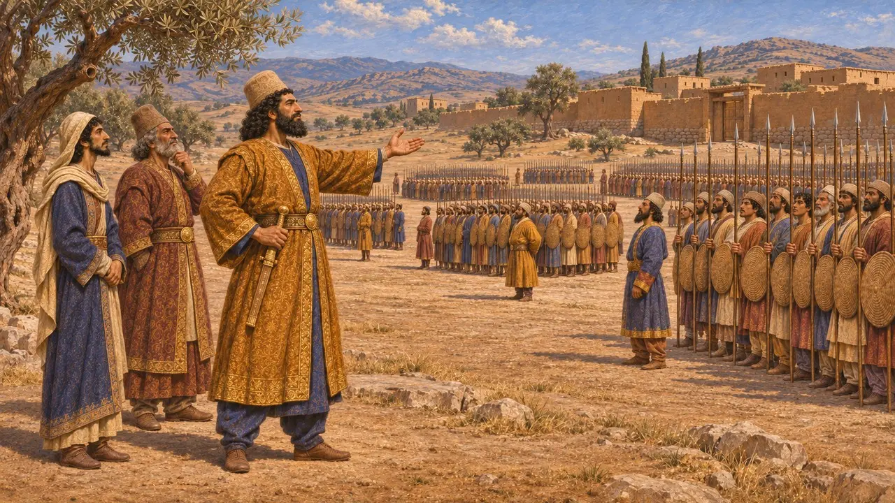
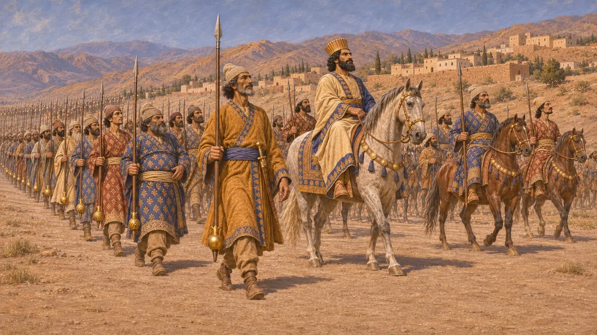
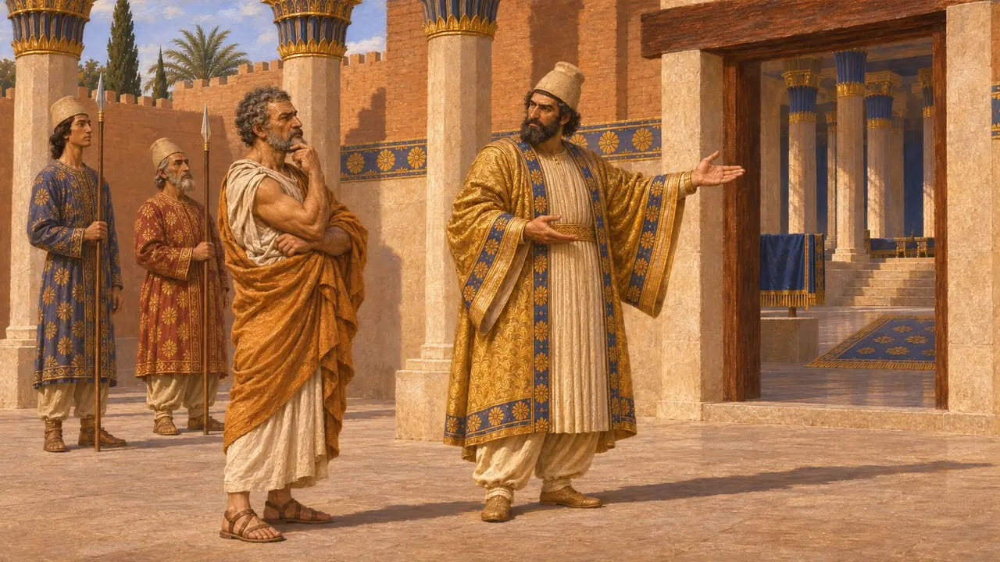
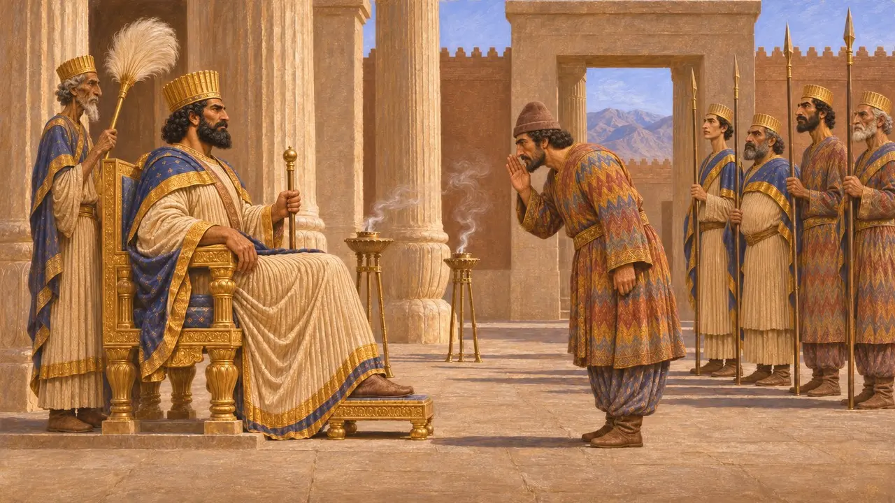
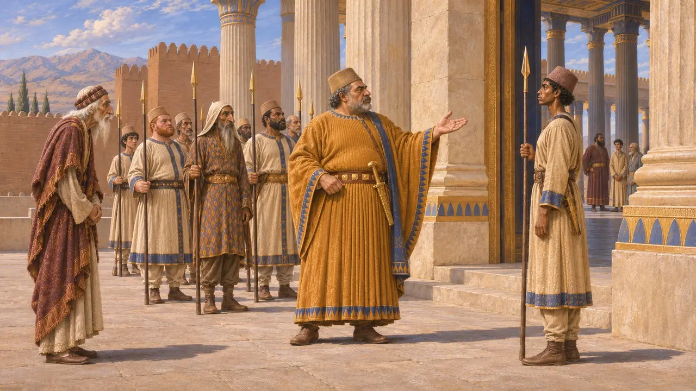

O hazarapatish
“Comandante dos mil” persa, oficial da guarda e funcionário da corte, período aquemênida (AEC)
O hazarapatish, ou quiliarca para os gregos, era o "comandante dos mil". O título provavelmente surgiu nas patentes decimais do exército persa e mais tarde foi associado à guarda pessoal do Rei e às suas audiências. O quanto o posto era poderoso, e quando se tornou um alto cargo da corte, ainda é discutido, pois a maior parte das evidências vem de escritores gregos.
No jogo: O jogo faz do hazarapatish uma unidade de comandante no campo de batalha. O sentido literal está correto, mas os ocupantes mais conhecidos do cargo aparecem nas fontes gregas como oficiais da corte que controlavam o acesso ao Rei, e não como generais de campanha.

Uma patente num exército decimal
Relato antigoHeródoto descreve o exército de Xerxes de 480 AEC como organizado em dezenas, centenas, milhares e dezenas de milhares, cada qual com seu próprio oficial. Em grego, o comandante de mil era um quiliarca. Os estudiosos modernos entendem isso como a tradução de um título em persa antigo, reconstituído como hazarapatish, que significa 'senhor de mil'.
Herodotus 7.81

Os mil ao lado do Rei
Relato antigoHeródoto diz que, na marcha, Xerxes era escoltado por mil lanceiros persas seletos e mil cavaleiros seletos. Ele acrescenta que algumas unidades da guarda portavam lanças rematadas por romãs de ouro, e que os homens mais próximos do Rei tinham maçãs de ouro. Muitos historiadores pensam que o comandante desse milhar de elite se tornou o oficial mais próximo da pessoa do Rei.
Herodotus 7.40-41

Guardião da audiência real
Relato antigoPlutarco conta que Temístocles, ao chegar à corte persa por volta de 465 AEC, foi recebido primeiro pelo quiliarca Artabano, que lhe explicou que os visitantes deviam prostrar-se diante do Rei. Cornélio Nepos diz que o quiliarca Titraustes avisou Cônon de que ele teria de se prostrar da mesma forma, e por isso Cônon preferiu tratar com o Rei por carta. Ambos os escritores viveram séculos depois dos fatos que descrevem.
Plutarch, Themistocles 27; Nepos, Conon 3

Os relevos de audiência em Parsa
Nos registrosRelevos encontrados no Tesouro de Persépolis mostram o Rei sentado recebendo um dignitário em trajes medos, que leva a mão à boca em saudação enquanto guardas permanecem atrás. A cena revela como se encenava uma audiência real. Alguns estudiosos identificam o dignitário como o hazarapatish, mas nenhuma inscrição o nomeia, e a identificação é debatida.
E. Schmidt, Persepolis I, 1953

Capitão da guarda ou grão-vizir
DisputadoNenhuma inscrição real em persa antigo nomeia o cargo, de modo que seus poderes são reconstruídos em grande parte a partir de textos gregos. Diodoro chama Artabano, que matou Xerxes em 465 AEC, de comandante da guarda real. Mais adiante, diz que os reis persas foram os primeiros a fazer do posto de quiliarca uma honra, e que Alexandre o concedeu a Heféstion. Alguns historiadores veem nele um ministro-chefe; outros, incluindo Briant, acreditam que os escritores gregos exageraram um cargo de guarda e protocolo.
Diodorus 11.69, 18.48; P. Briant, From Cyrus to Alexander, 2002
Fontes
- Herodotus 7.40-41, 7.81
- Plutarch, Themistocles 27
- Cornelius Nepos, Conon 3
- Diodorus 11.69, 18.48
- P. Briant, From Cyrus to Alexander, 2002
- E. Schmidt, Persepolis I, 1953